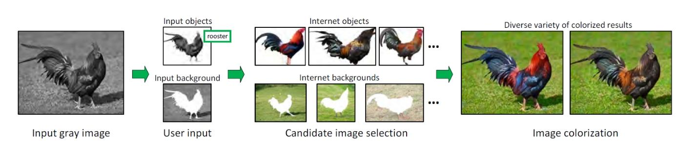
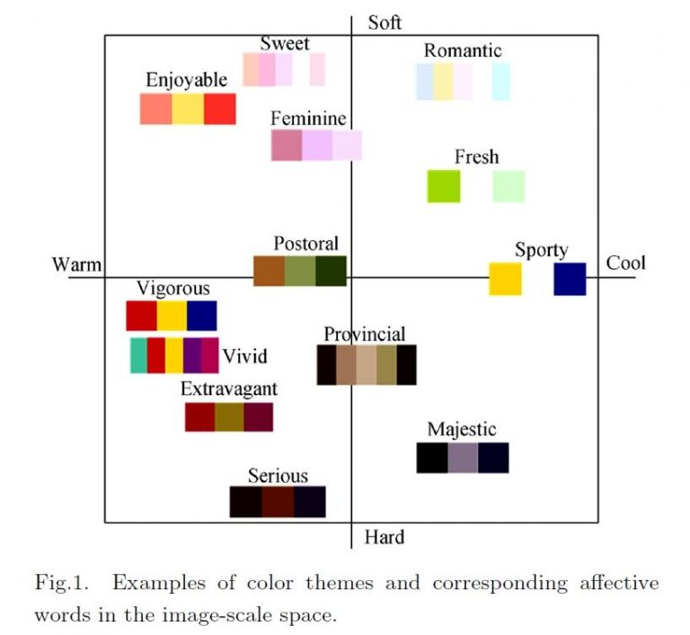
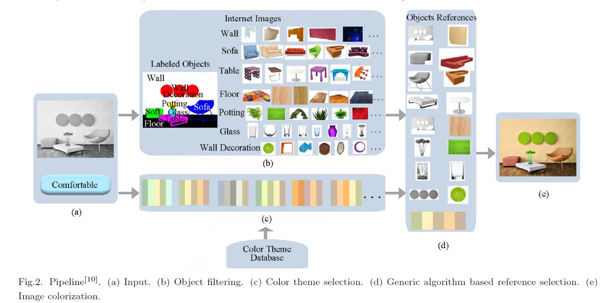
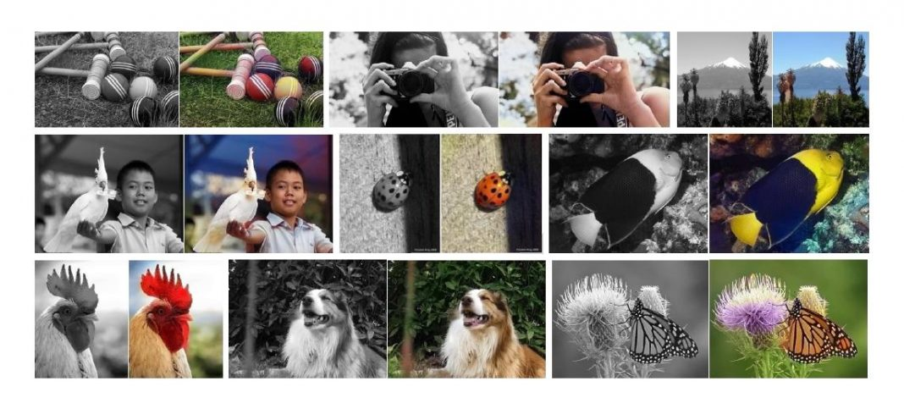

Data publicării: 16.02.2018
Autor articol: Anca Ignat
Termenul de colorizare a imaginilor (în engleză, „colorize”) reprezintă o prelucrarea realizată automat sau cu contribuția utilizatorului prin care se adaugă culori unei imagini gri (monocromatice). Această operație este făcută, de exemplu, pentru a îmbunătăți atractivitatea vizuală a imaginilor și filmelor mai vechi, care nu au variantă color. De asemenea această tehnică poate fi utilizate la marcarea regiunilor de interes în imaginile medicale sau la simulatoare de design interior sau machiaj.
Modul de percepere al culorilor de către oameni este un fenomen psihofiziologic care nu este în întregime cunoscut. Noi percepem culorile unui obiect în funcție de natura luminii reflectate de acel obiect. Pentru a se face diferențierea culorilor, în general se folosesc caracteristici precum intensitatea (strălucirea), nuanța și saturația. Problema colorării unei imagini gri este o problemă cu multe soluții posibile [1]. O imagini gri este descrisă doar de valoare intensității în fiecare pixel. Foarte multe culori diferite pot fi asociate cu această intensitate, culori care au nuanțe și saturații diferite și strălucirea egală cu intensitatea pixelului de colorat. Datorită acestei multitudini de soluții posibile în atribuirea culorilor într-o imagine gri, interacțiunea utilizatorului în procesul de colorizare joacă un rol foarte important.
Problema colorizării este strâns legată de problema segmentării unei imagini deoarece trebuie să atribuie culori obiectelor din imagine. Tehnicile de colorizare presupun implicit sau explicit că segmentele din imagine sunt bine marcate și definesc regiuni coerente în spațiul intensităților sau în cel al texturilor.
Tehnicile de colorizare se pot împărți în două tipuri de metode: unul care presupune intervenția utilizatorului care marchează („scribbles”) zonele de colorat și tehnici care folosesc imagini exemplu care să ajute procesul de colorizare. În primul caz, utilizatorul creionează folosind culorile dorite, diversele regiuni din imagine și apoi culoarea se propagă întregului obiect marcat. Al doilea tip de tehnici, cele care folosesc imagini exemplu, colorizarea se realizează făcându-se un transfer de culoare între regiunile similare din cele două imagini.
Pentru colorizarea imaginilor a fost propusă o metodă care indexează luminanța, atribuind fiecărei valori a luminanței o culoare, ținând cont de anumiți parametri. În [2] este propusă o metodă care se bazează pe marcarea manuală a imaginilor. Drumurile de propagare a culorilor sunt obținute prin aplicarea algoritmului Dijkstra, minimizând distanța locală a pixelilor de-a lungul drumurilor. Alte metode au folosit distanțe care să fie proporționale cu diferențele de intensitate. Abordarea din [2] îmbunătățește colorarea suprafețelor cu texturi, propunând două tipuri de distanțe pentru optimizarea căii de propagare a culorii. Această tehnică adaptează distanțele în funcție de proprietățile de textură ale regiunii unde este plasat semnul manual. De obicei, pentru o mai bună nuanțare a culorilor se folosește și costul asociat drumului.
Laun et al. in [3] prezintă tot o tehnică interactivă de colorizare a imaginilor, care presupune intervenția minimală a utilizatorului pentru colorarea imaginilor cu scene din natură. Tehnica de colorizare descrisă în [3] are loc în doi pași, unul de etichetare și unul de mapare a culorilor. În loc să se folosească marcaje manuale pentru a atribui direct culori pixelilor, în prima etapă, cea de etichetare, sunt marcate aproximativ regiunile din imagine care au culori similare. La pasul de mapare a culorilor, fiecărei regiuni etichetate la primul pas i se aplică paleta de culori specifică pentru a obține un efect de colorare intens. Pentru etapa de etichetare a fost propusă o metodă nouă, care să manevreze regiuni cu texturile cele mai des întâlnite în natura (iarbă, cer, pădure, flori, … ). Astfel, nu numai pixelii învecinați, care au intensități similare, dar și pixeli mai îndepărtați, dar care au trăsături de textură similari, vor avea culori similare. Pentru segmentarea imaginilor din natură în regiuni coerente folosind un număr minim de marcaje manuale, este introdusă o tehnică nouă de optimizare a energiei care incorporează atât restricții legate de intensități apropiate cât și cele care țin cont de texturi similare. Pentru fiecare regiune coerentă, sunt atribuite culori pentru câțiva pixeli selectați, apoi în pasul de maparea a culorilor se colorează restul pixelilor. Separarea celor doi pași, etichetarea pixelilor și colorarea lor, este un procedeu mai intuitiv pentru utilizatorii obișnuiți.
Pentru a evita marcarea manuală a imaginilor Chi et al. în [4] propun o colorizare semantică, folosind numărul foarte mare de imagini disponibile pe Internet. Colorizările bazate pe intervenția umană sau cele care împrumută culorile de la o altă imagine pot avea ca rezultat o imagine cu culori nenaturale. Cantitatea imensă de imagini de pe Internet aproape cu siguranță va conține imagini adecvate pentru obținerea unei colorizări naturale a oricărei imagini gri. În cazul metodei propuse în [4], la intrare utilizatorul trebuie să furnizeze un text explicativ (o etichetă) și repere de segmentare pentru obiectele importante din imagine. Folosind aceste informații, pentru fiecare obiect se descarcă de pe Internet mulțime de imagini similare, care vor fi folosite ulterior pentru transferul de culoare. Mulțimile de imagini asemănătoare obiectelor din imagine, se filtrează astfel încât să se obțină imagini de referință care apoi se folosesc la transferul de culoare și astfel rezultatul colorizării este de cele mai multe ori foarte natural. O schemă a modului de lucru a acestei metode este arătată în figura de mai jos:

Imaginile sunt descărcate în funcție de cuvântul/cuvintele cheie furnizate și apoi se face o filtrare după trăsăturile remarcabile, importante. Se extrag din fundal obiectele de interes și se compară cu cele din imaginea gri. Selectarea finală a obiectelor de referință se face folosind filtre care se bazează pe caracteristici de intensitate, textură și trăsături SIFT. Filtrarea pentru colorarea fundalului se face ținând cont de corelația care există între fundal și obiectele din prim-plan.
În [5] Wang et al. introduc noțiunea de colorizare afectivă. Ei pornesc de la ideea că diversele palete de culori folosite într-o imagine pot transmite diverse emoții. Imagini care au același conținut, dar care folosesc palete de culori diferite transmit emoții diferite. Prin urmare, problema colorizării ar putea ține cont și de sentimente/emoții la atribuirea culorilor.

Pentru această metodă de colorizare, datele de intrare sunt imaginea gri și un cuvânt care să exprime o emoție. Imaginea gri este segmentată semi-automat în obiecte. Utilizatorul etichetează fiecare obiect din imagine printr-un cuvânt care se folosește pentru descărcarea de pe Internet a unor imagini cu conținut similar și apoi se aplică filtrarea, ca și în cazul precedent pentru a obține imaginile de referință. Cuvântul „emoțional” introdus inițial ajută la selecția unor imagini care să aibă paleta de culori descrisă de acest cuvânt. Pentru atribuirea finală a culorilor se face la nivelul fiecărui obiect o colorare de tip sinteză a texturilor.

Problema colorizării este abordată de Zhang et al în [6] ca o problemă de clasificare și se folosește recalibrarea claselor la antrenare pentru a crește diversitatea de culori folosite. Sistemul de colorizare folosește o rețea neuronală convoluțională antrenată pe o mulțime de peste un milion de imagini. Scopul a fost obținerea unei colorizări plauzibile a imaginii gri. Sistemul de colorizare descris în [6] folosește spațiul de culoare Lab, pentru o anumită valoare a componentei L sunt prezise valorile celorlalte două canale, a și respectiv b.

După cum se observă, problema colorizării are multe abordări posibile, fiecare cu avantajele șî neajunsurile ei.
Referințe bibliografice
- Karthikeyani, V., Duraiswamy, K., & Kamalakkannan, P. (2007). Conversion of gray-scale image to color image with and without texture synthesis. IJCSNS, 7(4), 11-16.
- Kawulok, M., & Smolka, B. (2010, September). Competitive image colorization. In Image Processing (ICIP), 2010 17th IEEE International Conference on (pp. 405-408). IEEE.
- Luan, Q., Wen, F., Cohen-Or, D., Liang, L., Xu, Y. Q., & Shum, H. Y. (2007, June). Natural image colorization. In Proceedings of the 18th Eurographics conference on Rendering Techniques (pp. 309-320). Eurographics Association.
- Chia, A. Y. S., Zhuo, S., Gupta, R. K., Tai, Y. W., Cho, S. Y., Tan, P., & Lin, S. (2011, December). Semantic colorization with internet images. In ACM Transactions on Graphics (TOG) (Vol. 30, No. 6, p. 156). ACM.
- Wang, X. H., Jia, J., Liao, H. Y., & Cai, L. H. (2012). Affective image colorization. Journal of Computer Science and Technology, 27(6), 1119-1128.
- Zhang, R., Isola, P., & Efros, A. A. (2016, October). Colorful image colorization. In European Conference on Computer Vision (pp. 649-666). Springer, Cham.